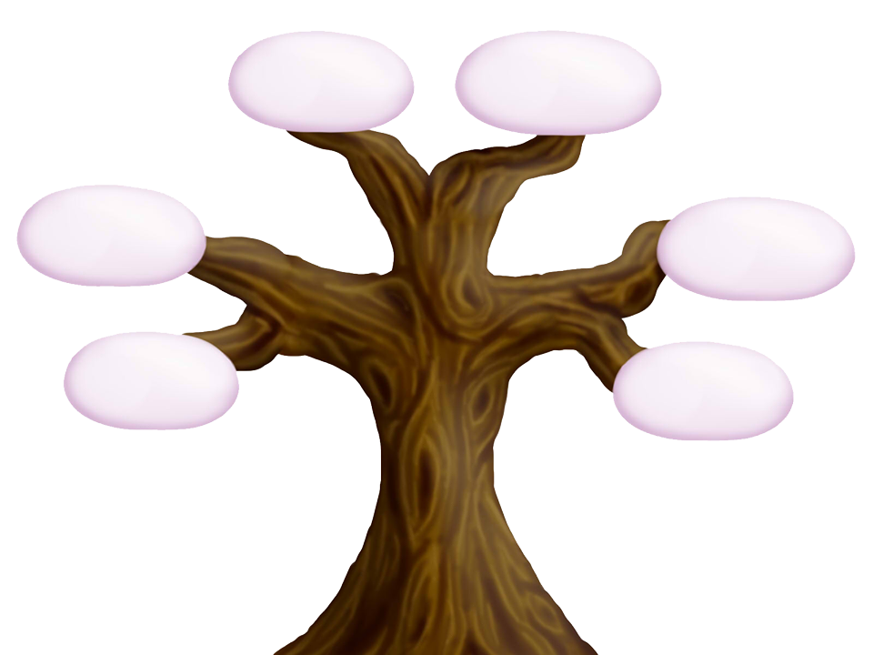

Intersexe le premier jour, un genre pour toujours ?
Qu’est-ce que l’intersexuation ?
Contrairement au sens commun, l’intersexuation ne se réduit pas à l’ambiguïté génitale. Il s’agit d’un ensemble complexe de variations physiologiques, endocrinologique ou génétiques qui ne se laissent pas classer selon la binarité des sexes. Il est donc plus exact de définir l’intersexuation non pas comme un mélange mythologique du féminin et du masculin, mais comme un sexe atypique.
En effet, le sexe dit biologique d’une personne est composé de plusieurs sous-catégories (sexe génétique, gonadique, hormonal, phénotypique, mais aussi sexe social ou sexe psychique). Lorsqu’il n’y a pas de concordance entre ces différents éléments (certains jugés comme masculins, d’autres comme féminins),
on peut parler d’intersexuation, de variation du développement sexuel ou de DSD pour Disorder of Sex Development (terme médical parfois rejeté car considéré comme patologisant)
D’après Michal Raz, Qualité de vie et fertilité dans les études de suvi des personnes intersexuées
On constate que ce sujet reste assez méconnu même dans une population jeune à priori plus sensibilisée aux questions de genres.
Après avoir lu une brève définition, à la question : Auparavant, aviez vous déjà entendu le terme “intersexe” ?, la population interrogée répond :
Vous trouverez ci-dessous un arbre des débats qui vous permettra de vous faire une idée globale de axes de débats sur ce sujet.

Sexe légal
LGBT(i?)
Opérations chirugicales
La mention du sexe à l'État civil est-elle pertinente ?
Quelle lien entre "sexe neutre" et opérations chirurgicales ?
Intersexe et trans, une même famille ?
Comment la cause intersexe se rapporte-t-elle (ou non) au mouvement LGBT+ ?
Doit-on traiter les personnes intersexes comme des pathologies ?
A qui devrait revenir la décision pour les opérations qui se font à la naissance ?
La mention du sexe à l'État civil est-elle pertinente ?
La controverse sur intersexe, lève un profond débat de société sur le rapport de l’Etat aux individus. En particulier, l'État doit-il connaître le sexe des individus ? Ou très concrètement, le sexe d’un individu doit-il être mentionné à l'État civil ?
D’après le sociologue Eric Fassin, les évolutions sociales auxquelles nous avons assisté récemment, comme par exemple le mariage pour tous et l’adoption pour les couples du même sexe, ont remis en cause l’utilité de la mention du sexe à l'État civil.
Le philosophe Gaspard Koenig, président de think tank génération libre s’appuie sur une définition de la liberté “négative” établie par Georges Perec pour avancer un argument fondamentalement différent : Pour lui chaque individu est entouré d’une sorte bulle imaginaire dans laquelle il possède tous les droits et peut tout faire et ce indépendamment de l’action de l’Etat. La thèse de Gaspard Koenig est simplement que le sexe d’un individu appartient à cette bulle et qu’ainsi le fait que l’Etat recense son sexe est une atteinte à la liberté dudit individu.
Enfin, ce débat est étroitement lié avec la controverse concernant l’obtention de la mention sexe neutre à l'État civil. En effet, les intersexes sont divisés entre d’un côté ceux qui désirent obtenir la mention sexe neutre à l'État civil et les autres, dont par exemple Vincent Guillot qui vit l’assignation d’un sexe légal comme une violence à sa personne en effet il ne se reconnaît dans aucune des deux ou potentiellement trois catégories proposées à l'État civil , il prône donc l’absence du sexe à l'État civil.
Sondage :
Pensez vous qu’il est utile de préciser son sexe “légal“ sur une carte d’identité ou passeport ?
La remise en cause de la binarité du sexe légal à l'État civil est un des piliers de la controverse intersexe. Le coeur de ce débat a été mis à nu en 2015 par requête émise par Gaëtan Schmidt au Tribunal d’Orléans pour obtenir une mention “sexe neutre” à l'État civil. Cette demande, accordée dans un premier temps aurait permis aux intersexes d’obtenir une existence légale à proprement parlé et de ne plus être classé dans une catégorie qui ne correspond pas à la réalité de leurs physionomies.
Cependant, en 2016, un recours à la cour de cassation a supprimé cette possibilité. L’argument principal de la cours de cassation repose sur le fait que le désordre social et administratif que l’accès à une telle mention pourrait causer est trop important par rapport à la gêne occasionnée pour les plaignants.
Plus qu’une victoire sociale, légale ou symbolique, l’obtention d’une mention “sexe neutre” pour les intersexes aurait pu être un pas très concret vers la protection des enfants intersexes contre les opérations d’assignement de sexe à la naissance. En effet, lors de la naissance d’un enfant intersexe, ni les parents, ni les médecins ne savent vraiment comment agir. Aussi, l’obligation de la mention d’une sexe légal binaire ( homme ou femme) sur l'État civil force une décision rapide des parents et des médecins, décision qui peut aboutir sur une intervention chirurgicale d’assignation de sexe. Ainsi en autorisant le sexe neutre à l'État civil, on permettrait aux parents, aux médecins, et à l’enfant lui-même d’obtenir un laps de temps supplémentaire pour décider ou non de son sexe physique, et de la physionomie qui coïncide avec son genre.
Même si la mention “sexe neutre” n’a pas pu être obtenue de manière durable, le simple fait qu’un tel débat ait pu avoir lieu est la démonstration de l’existence d’une dynamique en faveur des droits des intersexes qui n’existait pas auparavant. Ce mouvement, cette impulsion donne de l’espoir aux intersexes qui y voit une opportunité pour faire cesser les opérations chirurgicales systématiques pratiquées sur les enfants intersexes.
« Signe Mars et Vénus, utilisé comme symbole des personnes intersexes ou celles transgenres. »
Intersexes et trans* les mal-aimés du système ?
Nos interrogations ont débuté avec ce communiqué dans lequel l’association Trans* et intersexe reproche à l’inter-lgbt (ne vous trompez pas, inter n’est pas pour intersexe, mais « L’Interassociative lesbienne, gaie, bi et trans »): « de parler en notre nom, surtout si c'est pour défendre des approches rétrogrades. » « En effet, Alors
que les choses ne cessent d’avancer dans les mouvements trans* et intersexe, comme le montrent le succès de l’Existrans et la logique d’autonomie défendue par un nombre croissant d’orga[nisation]s et de personnes concernées, l'Inter-LGBT retourne en arrière, faisant ainsi preuve d'un mépris inégalé ou d'une méconnaissance incroyable, en mettant en avant des propositions réactionnaires, pathologisantes et infantilisantes, dignes de pratiques et d'années que nous pensions révolues. Nous l’invitons à s'interroger sur sa légitimité et sur sa responsabilité à s'exprimer ainsi à l'encontre des personnes concernées et de leurs cadres collectifs. »
L’acte et les paroles de l’association « inter-lgbt » et la réaction de l’association Trans et Intersexe résume parfaitement et justifient ici nos interrogations.
Ils nous permettent également de voir que les trans* et les intersexes sont peut-être relégués au même statut. Ajouter des communautés dont le débat ne porte pas sur les mêmes sujets à savoir : l’orientation sexuelle, le genre, le corps,etc même si les combats de reconnaissance vis à vis de la société et de dé-médicalisation par rapport aux médecins sont les mêmes ; ne suffisent peut-être pas et mènerait à la priorisation des causes dans le mouvement LGBT+, or elles devraient toutes porter le même statut.
Les trans* et les intersexes tiennent peut-être le même statut au sein du mouvement LGBT, mais appartiennent-ils à la même communauté ?
Les intersexes ne font pas partie du mouvement trans*
« Non. Bien que des individus qui sont intersexués puissent s’identifier comme transgenre, le contraire n’est pas vrai. La plupart des personnes du mouvement transgenre ne sont pas intersexuées. Inclure l’intersexuation sous le terme-chapeau de "transgenre" néglige nos besoins spécifiques qui sont souvent une réforme médicale, des solutions légales au sujet du genre que nous avons, des solutions en termes de santé spécifiques aux corps intersexués et par-dessus tout, le fait que la plupart des personnes intersexuées ne sont pas des trans. Beaucoup sont heureux d’être des hommes ou des femmes et de plus en plus d’entre nous sont ravis d’être intergenres. » [Source]
Beaucoup de problématiques rapprochent intersexes et trans*. Parmi elles, on peut citer celle de l’apparence physique qui ne correspond pas à celle assignée, celle de l’état civil qu’ils veulent sans conditions ou encore la dépathologisation de leur condition.
Vous trouverez ici et ici [traduit de cette source] deux tableaux récapitulant les différences entre Trans* et intersexe.
Les trans* sont-ils des intersexes ?
« Le problème le plus récent est de savoir si les personnes transgenres devraient être "autorisées " à se définir comme intersexe, affirmer que les deux groupes sont, à toutes les fins pratiques, les mêmes, et devraient être combinés en un seul groupe de « transgression de genre ». »
« Je suis en profond désaccord avec ce concept [...], je reçois constamment des courriels et des lettres de transgenres demandant : « Pouvez-vous m'aider à savoir si je suis intersexe ? » Ce que la plupart d'entre eux signifie vraiment, bien sûr, est : « J’espère que je suis intersexe d'une certaine manière, parce que je vais avoir une raison biologique légitime d'être transgenre et ainsi justifier ma transexualité devant mes parents / patron / Les amis / les conjoints / les enfants etc. » C'est comme si, dans l'esprit de certaines personnes, intersexe est plus" réel "et donc plus légitime que transsexuel ou transgenre. »
Certains « transsexuels expriment l'envie à ceux d'entre nous qui ont été mutilés à la naissance. (« Tu es si chanceux ! Tu as eu le changement de sexe que je voulais ! ») » [Source]
En 2010, Tracie O’Keefe, sexologue, hypnothérapeute et auteur présente le terme « ISGD » pour Intersex Sex and/or Gender Diverse. Elle a écrit beaucoup d’ouvrages sur les problèmes que rencontrent les trans*. O’keefe a écrit un article : Trans as intersex : Crossing the line dans lequel elle redéfinit intersexe comme une identité trans* et déclare que toute personne intersexe qui n'est pas d'accord avec cette définition est transphobe.
L'ajout d'un « I » à « SGD » a associé des personnes intersexes avec par exemple les personnes trans* sans consentement et consensus avec les intersexes.
Cet ajout a eu pour conséquence l'appropriation et la redéfinition d'intersexe comme une forme d'identité transgenre et par la même occasion d’effacer les personnes intersexes en tant que groupe distinct, leur réalité et leurs revendications. ISGD est une autre façon d'exprimer trans* comme intersexe. Ainsi l’Organisation Internationale des Intersexuées, la première organisation intersexuelle internationale demande aux personnes et ou organisations utilisant cette terminologie d’arrêter.
Frise :
Comment la cause intersexe se rapporte-t-elle (ou non) au mouvement LGBT+?
Si vous vous attelez à des recherches sur les intersexes, vous tomberez forcément sur le terme « LGBTI » qui représente le mouvement LGBT et les intersexes. Après des recherches sur les demandes des intersexes et leur combat, le manque de visibilité est une des préoccupations au cœur du problème.
Une interrogation s’empare alors de nous, le mouvement LGBT qui est aujourd’hui si visible, prend sous son aile les intersexes et ces derniers ne parviennent toujours pas à être visibles. Pourquoi ?
Quels sont les intérêts communs aux deux partis qui justifient leur alliance et quelles sont les différences qui sèment encore le doute quant à la légitimité de l’ajout de la lettre « i » dans LGBTI.
On ne trouve étonnamment pas de communiqué officiel de la part de la communauté LGBT déclarant officiellement leur alliance avec les personnes intersexes. Chaque centre LGBT ou association, a la liberté ou non d’ajouter le « i ». Y-a-t-il unanimité quant à la cohérence de l’ajout de la cause intersexe à celle des LGBT ?
Le « i » de LGBTI que signifie-t-il ?
Commençons par les définitions de l’acronyme LGBT et de l’intersexuation :
Les personnes intersexes sont nées avec des caractéristiques sexuelles physiques qui ne correspondent pas aux normes médicales et sociales pour les corps féminins ou masculins. On parle d’une ambiguïté sexuelle.
D’où vient cette assimilation entre LGBT et intersexe ? Revenons, 10 ans en arrière.
« Les personnes se déclarant intersexuées confrontent une forme particulière de violence : la mutilation des organes génitaux provoquée par des chirurgies post-natales inutiles afin qu’elles deviennent conformes au modèle binaire traditionnel des caractéristiques sexuelles »
« Nous exigeons que les interventions chirurgicales sur les organes génitaux des personnes intersexuées soient interdites jusqu’à ce que ces dernières soient en âge de comprendre et de consentir à un tel geste »
« Les transgenres, transsexuels, intersexués et personnes en transition de sexe sont de plus en plus visibles et font partie de notre communauté qui commence à tenir compte de plusieurs de leurs demandes »
Ils appellent à l'application des droits humains des personnes LGBT et intersexuées : le Principe 18, « Protection contre les abus médicaux », stipule que :
« Nul ne peut être forcé de subir une quelconque forme de traitement, de protocole ou de test médical ou psychologique, ou d’être enfermé dans un établissement médical, en raison de son orientation sexuelle ou de son identité de genre. En dépit de toute classification allant dans le sens contraire, l’orientation sexuelle et l’identité de genre d’une personne ne sont pas en soi des maladies et ne doivent pas être traitées, soignées ou supprimées. »
Intersexe et LGBT ? même combat ? Une alliance profitable aux deux partis ?
Les intersexes sont désignés comme des personnes aux conditions pathologiques qu’il faut « réparer ». Ils sont complètement invisibilisés. Cela rappelle énormément le passé des homosexuels pour qui, il y a 30 ans, la dé - médicalisation de leur sexualité était au cœur des discussions.
En effet, les homosexuels ont été traités comme des personnes ayant une pathologie psychiatrique. Jusqu’en 1992 en France, l’homosexualité avait sa place dans un diagnostic au même titre que la schizophrénie ou la dépression. Tout cela a amené la psychiatrie à se remettre en question.
Même si les LGBT et les intersexes ont mené (ou mènent pour les intersexes) le même combat pour la dé-pathologisation de leur situation, cela justifie-t-il leur association ?
L'acronyme LGBT représente ceux qui ont des orientations sexuelles et des identités de genre qui diffèrent de ce que l’on connaît traditionnellement.
Être intersexe, ce n'est pas une orientation sexuelle ou une identité de genre, c'est physique, ça a rapport avec le corps.
Certaines personnes intersexes peuvent effectivement faire partie des LGBT mais pas nécessairement. Pourtant, avant même d’être mis sous le même acronyme, les intersexes étaient forcément vus comme des personnes faisant parties de la communauté LGBT.
« Le traitement chirurgical pour les conditions intersexes est fortement motivé par l'homophobie, la transphobie et la misogynie. La médecine occidentale définit les organes génitaux "fonctionnels" masculins et féminins en termes de capacité à participer à un rapport sexuel hétérosexuel plutôt que de combien de plaisir sexuel les patients peuvent atteindre - c'est pourquoi éliminer le clitoris d'une femme est médicalement acceptable selon les médecins, aussi longtemps que son vagin est assez profond pour être pénétré par un pénis. » [Source1] [Source2]
Les intersexués font encore plus face à une invisibilité lorsqu’ils sont entraînés dans un mouvement aussi large que LGBT. Les intersexes en deviennent complètement dépendants et il devient très difficile par exemple de retrouver des ressources spécifiques aux intersexes sur internet. LGBTI sur internet renvoie des résultats uniquement sur les combats des LGBT et non des LGBTI.
Qui de mieux placé pour parler de la cause intersexe que les intersexes eux même ?
Les besoins des intersexes et du reste du mouvement LGBT sont différents. Le mouvement intersexe (si l’on peut parler d’un mouvement) n’est pas un mouvement identitaire, les intersexes n’ont pas une seule identité ou orientation sexuelle en commun comme les membres du mouvement LGBT.
Selon certains intersexués, « le mouvement LGBT n’a pas une nécessité de changer le nom de leur organisation. Une association LGBT peut et devrait travailler sur des problématiques intersexe comme sur d’autres problématiques tels que l’anti-racisme et l’anti-sexisme. Ce qui compte c’est ce qu’on fait par l’appellation de notre association. »
Orientation sexuelle des intersexes https://oii.org.au/demographics/
Il y a quelques années, l’acronyme LGB est devenu LGBT avec le “T” pour Trans*.
Pour autant, être trans* n’est pas une orientation sexuelle. La transidentité est le fait chez une personne d'avoir une identité de genre autre que celle assignée à la naissance. On parlera d'une personne transgenre ou, plus communément, d'une personne trans.
Quelques années auparavant, le fait d’être trans* semblait plus lié à la transition et n’avoir aucun point commun avec les L, G, B. Cependant, il est paru logique pour les L, G, B et les trans* de s’allier pour pouvoir mener à bien la lutte pour leurs droits et la reconnaissance de leur identité.
Intersexe ne constitue pas une forme de diversité de genre, car être intersexe ne concerne pas le genre, ni la transition. Intersexe concerne les corps et les différences physiques congénitales dans les caractéristiques sexuelles.
Est-il nécessaire que la majorité des personnes intersexes s'identifient complètement en termes d'orientation sexuelle ou d'identité de genre aux L, G, B, T pour pouvoir justifier la légitimité de ce « i » ?
Le mouvement LGBT est-il prêt à accueillir le « i » de façon officiel et à défendre leur cause autant que celles des L, G, B ou T ?
Frise :
Doit-on traiter les personnes intersexes comme des pathologies ?
La controverse sur la qualité pathologique ou non des personnes intersexes, ayant pour conséquence l’intervention ou l'absence d’intervention chirurgicale, est un sujet sensible.
C’est ainsi qu’en 2006 les médecins se sont mobilisés lors d’une conférence afin d’arriver à un consensus international sur les intersexes. Cette conférence organisée par la Lawson Wilkins Pediatric Endocrine Society et l’European Society for Paediatric Endocrinology avait pour but de redéfinir les termes employés pour désigner les personnes intersexes et les différentes pathologies les affectants. En effet, ces termes étaient jugés d’une part trop flous et d’autres part trop péjoratifs pour les patients. On parle depuis de désordre du développement sexuel et non plus d’intersexe. Les anciennes appellations sont regroupées sous de nouveaux noms. Toutes les anomalies portent un nom bien précis en fonction des différences de phénotype et de caryotype observées par rapport au personnes non intersexes. Chaque différence est associée à un ou plusieurs procédés chirurgicaux et/ou endocrinologiques et/ou psychologiques visant à corriger cette différence ou à l’atténuer le mieux possible. Dans une publication du docteur Pierre Mouriquand, chirurgien en pédiatrie, on peut trouver des détails très précis des opérations chirurgicales réalisées en fonction de la pathologie. Dans cette publication, on peut remarquer deux types de pathologies. Celles où une unique méthode chirurgicale est présentée et celles où il y en a plusieurs. Cela reflète donc une grande variété de pathologies au sein des DSD et une certaine incertitude sur les méthodes à employer dans certains cas. On voit donc que pour les médecins les intersexes présentent donc des caractéristiques pathologiques mais face auxquelles l’action à mener n’est pas immédiate et certaine.
Du point de vue des docteurs en sciences sociales on ne rencontre pas de dénis d’un problème chez les personnes intersexes; qu’il soit social ou de santé. Cependant ils ne sont pas toujours en accord avec les techniques employées par les médecins. Pour Janik Bastien Charlebois, intersexe et professeure au département de sociologie à l’Université du Québec à Montréal, le jugement des professionnels médicaux s’investissant dans la prise en charge intersexe peut être imprégné de présupposés non fondés ou d’aprioris culturels (voir ci-après). Pour elle cela souligne la faillibilité de leur jugement et donc leur susceptibilité d’adopter des approches inappropriées et dommageables lors du traitement de la pathologie. Pour André Wilcox, Isabelle Côté, et Geneviève Pagé c’est l’incapacité de l’enfant de s’exprimer et la différences entre le sexe biologique et le sexe social (ou genre) qui devrait amener à privilégier le respect de l’intérêt supérieur des enfants intersexes en réalisant des interventions plus inclusives et non suppressives.
Frise :
A qui devrait revenir la décision pour les opérations qui se font à la naissance ?
Une intervention chirurgicale est un procédé irréversible et qui doit donc faire l’objet d’un réflexion approfondie. Les enfants intersexes sont souvent opérés en urgence. Mais qui prend la décision ? et est il nécessaire de le faire si tôt ?
En 1955, John Money, psychologue a publié un théorie stipulant que le conditionnement et l’éducation sociale ont préséance sur la biologie originelle du corps quant à l’élaboration de l’identité de genre qui, elle, serait malléable jusqu’à 18 mois. Les travaux de Money ont eu une influence déterminante sur le traitement des enfants intersexués. Cela explique la prise en charge rapide par certains médecins des enfants intersexes et ce souvent après de brèves explications auprès des parents qui acceptent souvent par peur et ignorance. En 1967, Money essaya de démontrer sa théorie en castrant un enfant de 2 ans et demi ayant perdu son pénis à l'âge de 9 mois et en l’élevant comme une fille avec l’aide d’hormones féminines. Cependant, l’expérience ne fut pas concluante car plus tard cet enfant souhaita retrouver son sexe masculin. C’est cette échec qui sema le doute au sein des scientifiques qui sont maintenant plus partagés sur les comportements à adopter face aux pathologies intersexes.
Dans un écrit , publié en 2016,d’un colloque de chirurgiens pédiatriques, dont Pierre Mouriquand, on retrouve cette prise de conscience des controverses engendrées par les opérations et des incertitudes présentes sur leur potentielle bienfaisance. Il est mentionné que la classification faite lors du consensus de 2006 n’indique en aucune façon dans quelle situation une opération est nécessaire et si elle l’est quand et comment la réaliser. Cela entraîne donc au sein du milieu médical un importante multiplicité des modes d’interventions. Cependant, ces médecins expliquent que dans certain cas les conséquences d’une non intervention peuvent être plus dramatiques. Par exemple dans le cas d’une hyperplasie congénitales de surrénales (HCS) chez les filles, entraînant une surproduction d’hormones masculines, peut, si non traité au niveau endocrinologique, résulter en une masculinisation importante et un dysfonctionnement de la sexualité féminine. Les opérations visant à reconstituer l’allure d’un organe sexuelle féminin ne sont pas obligatoires mais permettent d’éviter des troubles psychologiques dû à la différence physique. Ces opérations entraînent souvent une perte de sensibilité mais pas de complications.
Au niveau des sciences sociales les avis diffèrent. Certains souhaites attendre avant de réaliser ces opérations afin que le patient concerné puisse exprimer son opinion sur le sujet. Pour André Wilcox, Isabelle Côté, et Geneviève Pagé, les parents et les enfants ont besoin d’être accompagnés sans qu'ils leurs soient imposés des traitements qui n’ont pas fait leurs preuves. En effet, pour le cas de l’hypospadias, une malformation du fœtus masculin qui se manifeste par l'ouverture de l'urètre dans la face inférieure du pénis au lieu de son extrémité, la technique chirurgicale employée reste encore très hasardeuse. Cette pathologie souvent traitée aux alentours de la 3ème année du patient entraînent fréquemment des complications, dont font états les publications médicales. Cependant cette pathologie n’a pas un caractère létale pour le patient. Elle représente seulement un gêne pour uriner et avoir de bons rapport sexuels. Il serait donc possible d’attendre plus de temps pour réaliser cette opération et donc de prendre en compte plus de facteurs. Cependant, pour d’autres pathologies, l'ambiguïté du sexe peut poser problème avec l’assignation au niveau juridique, entraînant ainsi une tendance à une opération rapide afin d’assigner un sexe.
Pour les opérations ne pouvant être retardée, Janik Bastien Charlebois, propose de prendre en compte l’avis d’une population représentative de l’enfant afin de cerner adéquatement et comprendre les besoins potentiellement diversifiés qu’il éprouve et n’est pas encore capable d’exprimer. L’argument est qu’une personne intersexuée prise individuellement ne peut être infaillible dans la construction de toutes ses réflexions mais qu’on ne peut négliger la qualité des réflexions collectives produites par les membres d’une communauté.
Sondage :
Si un enfant naît avec une ambiguïté sexuelle (mais sans problèmes de santé graves) à savoir que ses organes génitaux sont difficiles ou impossibles à définir comme mâles ou comme femelles selon les standards habituels. Qui doit décider du sexe de l’enfant ?